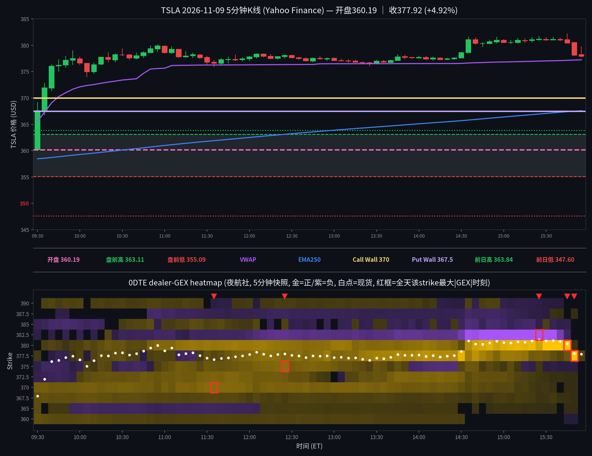

TSLA 日内报告
2026年11月9日 · 周一 · 日内报告
早盘分析
（Junk-man 早盘简报未抓取到，留空待补）
（待补充 Junk-man 当日 #junkman-analysis 原文）
5 分钟 K 线 × 0DTE heatmap
0DTE，夜航社 78 档 5 分钟快照；白点为每档现货位置

heatmap解读（0DTE，夜航社 78 档 5 分钟快照）
0DTE全天78档5分钟快照（09:30–15:55 ET）。开盘 360.19，收 377.92（+4.92%），盘前高/低 363.11/355.09。
- 早盘(09:30) 现价 367.93：上方强节点 370(+14.2M)；下方强节点 355(+5.1M), 360(+7.4M), 365(+6.2M), 367.5(+6.5M)；负gamma带 362.5(-2.9M), 372.5(-1.7M), 385(-2.3M)。
- 节点强度大变化（首→末）：370 +14.2M→+0.0M（-100%）；360 +7.4M→+0.0M（-100%）；367.5 +6.5M→+0.0M（-100%）；365 +6.2M→+0.0M（-100%）；355 +5.1M→+0.0M（-100%）；350 +3.3M→+0.0M（-100%）。
- 尾盘(15:55) 现价 377.94：强正节点 377.5(+2.5M)；负gamma带 无。
- 大单流（premium≥200k/size≥50/DTE≤1，共6笔）：call主动买 0.29M / 主动卖 0.65M；put主动买 0.30M / 主动卖 0.61M。call买=看多、put买=看空/对冲、put卖=看多/收保费。
全天最大节点 TOP5
一、380（正 gamma 墙/地板，峰值 +459.2M）：全天变化——从 +1.8M 到 +459.2M（约259倍）；影响时段——15:45 ET 达到峰值，当时现货约 380.47；影响方式（初稿）——价格在其附近获得支撑/减速，以实际 K 线为准。
二、377.5（正 gamma 墙/地板，峰值 +346.8M）：全天变化——从 +1.1M 到 +346.8M（约327倍）；影响时段——15:50 ET 达到峰值，当时现货约 378.14；影响方式（初稿）——价格在其附近获得支撑/减速，以实际 K 线为准。
三、382.5（负 gamma 加速带，峰值 -253.9M）：全天变化——从 -0.7M 到 -253.9M（约253,867,637倍）；影响时段——15:25 ET 达到峰值，当时现货约 381.34；影响方式（初稿）——价格进入后波动放大、加速通过，以实际 K 线为准。
四、375（正 gamma 墙/地板，峰值 +26.5M）：全天变化——由 -0.8M 翻转为 +26.5M；影响时段——12:25 ET 达到峰值，当时现货约 377.96；影响方式（初稿）——价格在其附近获得支撑/减速，以实际 K 线为准。
五、370（正 gamma 墙/地板，峰值 +24.3M）：全天变化——从 +14.2M 到 +24.3M（约2倍）；影响时段——11:35 ET 达到峰值，当时现货约 376.64；影响方式（初稿）——价格在其附近获得支撑/减速，以实际 K 线为准。
亮度口径：p99 截断 142.2M；红框 = 全天该 strike 最大 |GEX| 时刻。
资金流（0DTE，全天6笔；premium≥$20万｜size≥50｜DTE≤1｜side=B/M/A）
| 时间 | Strike | C/P | DTE | Fill | Bid/Ask | Side | Size | Prem | Vol | OI |
|---|---|---|---|---|---|---|---|---|---|---|
| 09:37:17 | 380.0 | PUT | 0 | $10.20 | 10.20 / 10.50 | BID | 356 | $0.363M | 772 | 1613 |
| 10:31:49 | 375.0 | CALL | 0 | $5.15 | 5.10 / 5.15 | ASK | 563 | $0.290M | 34262 | 1948 |
| 11:12:23 | 380.0 | PUT | 0 | $3.18 | 3.10 / 3.15 | BID | 772 | $0.246M | 15898 | 1613 |
| 11:32:40 | 380.0 | PUT | 0 | $4.00 | 3.95 / 4.00 | ASK | 751 | $0.300M | 19769 | 1613 |
| 13:24:20 | 372.5 | CALL | 0 | $4.30 | 4.30 / 4.50 | BID | 701 | $0.301M | 19667 | 1196 |
| 14:43:40 | 377.5 | CALL | 0 | $3.25 | 3.25 / 3.30 | BID | 1074 | $0.349M | 88352 | 1074 |
全天6笔：call ask $0.29M / call bid $0.65M，put ask $0.30M / put bid $0.61M，mid $0.00M（不计入主动买卖）；主动资金中性。 主动买前列：11:32 put ask 380ITM $0.30M×751; 10:31 call ask 375ITM $0.29M×563。 主动卖前列：09:37 put bid 380ITM $0.36M×356; 14:43 call bid 378ITM $0.35M×1074; 13:24 call bid 372ITM $0.30M×701。
分析总结
① ；全天 382.20–360.02，收 377.92（+4.92%）。
② 白点轨迹：开 360.19 → 高 382.20 → 低 360.02 → 收 377.92。
③ 早盘(09:30) 现价 367.93：上方强节点 370(+14.2M)；下方强节点 355(+5.1M), 360(+7.4M), 365(+6.2M), 367.5(+6.5M)；负gamma带 362.5(-2.9M), 372.5(-1.7M), 385(-2.3M)。
④ 资金流：全天6笔：call ask $0.29M / call bid $0.65M，put ask $0.30M / put bid $0.61M，mid $0.00M（不计入主动买卖）；主动资金中性。 主动买前列：11:32 put ask 380ITM $0.30M×751; 10:31 call ask 375ITM $0.29M×563。 主动卖前列：09:37 put bid 380ITM $0.36M×356; 14:43 call bid 378ITM $0.35M×1074; 13:24 call bid 372ITM $0.30M×701。
heatmap 亮度=平方根连续渐变（p99 裁剪）；K线=Yahoo Finance 5分钟；heatmap=夜航社 dealer-GEX 5分钟快照；页面为收盘后静态快照，不实时更新行情。
收盘后的静态快照；页面不在打开时更新行情。